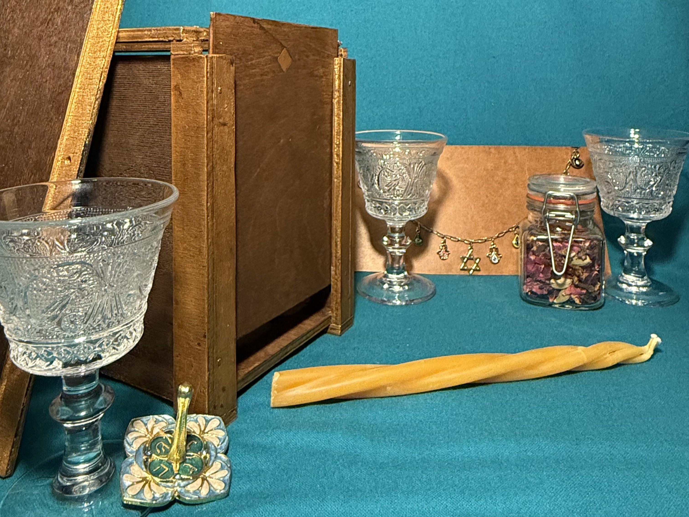
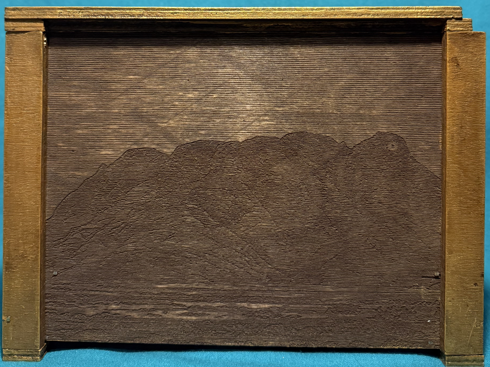
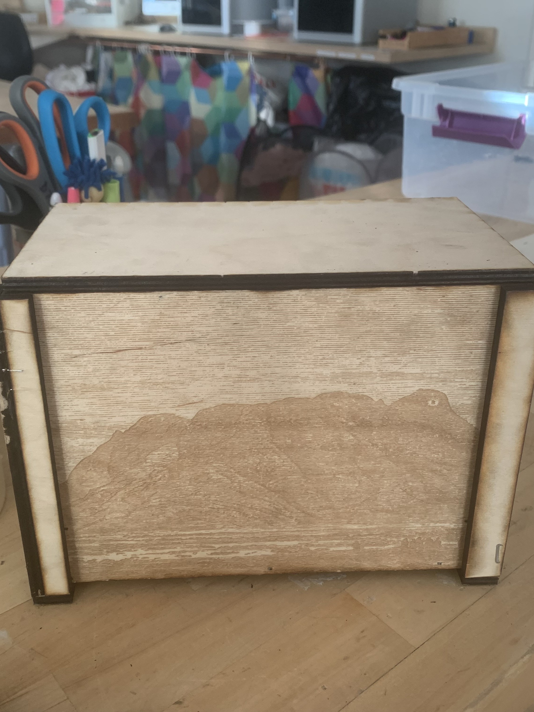
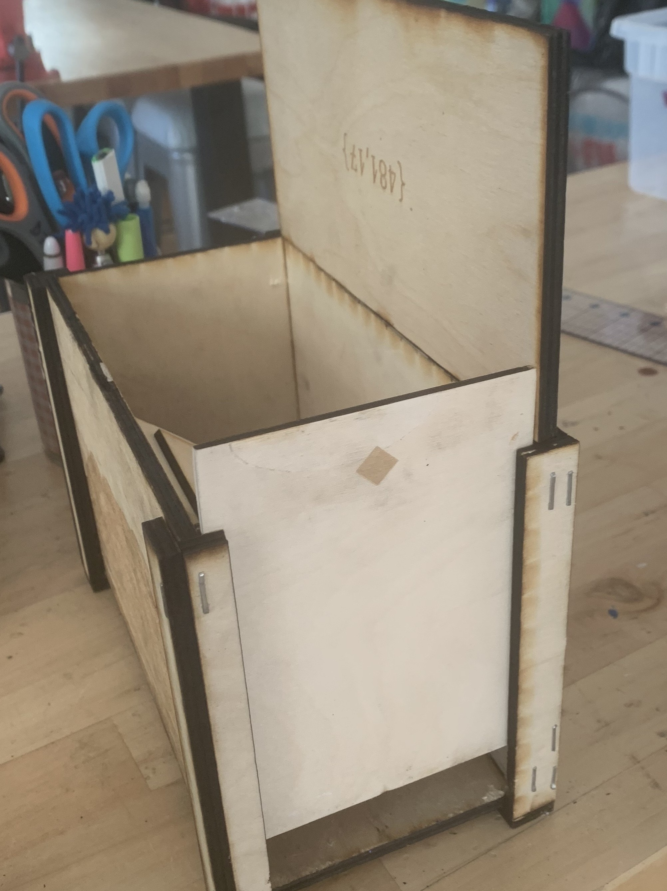
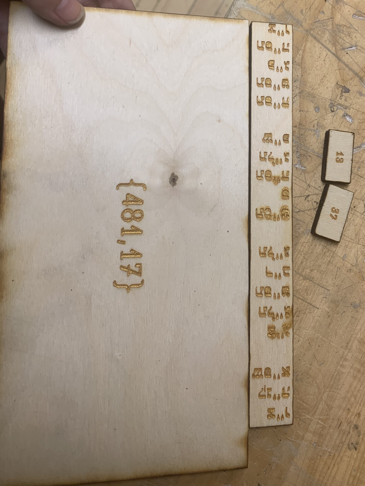
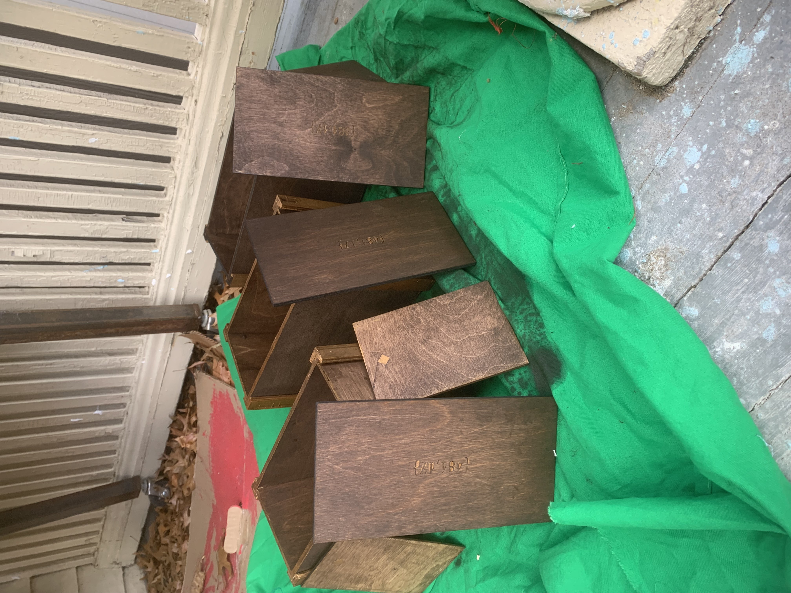

Final Prototype


Process
Puzzle Box Fabrication




Collective and Convivial Poetry
In our exploration of conviviality, my capstone cohort experimented with several forms of collaborative creation. One exercise we found particularly fruitful was "exquisite poetry," inspired by the drawing game exquisite corpse. Each of us wrote a single line of a poem, only knowing the contents of the line before. Though we ended up with many poems, the piece selected below was our favorite.
This work was created in collaboration with George Kermond, Chlo Gold, Liv Sarno, Rasa Walter, Talia Blanchard, Finn Walsh, and Vigdis Nobel.
A shimmer of collective effervescence
Collaboration
We can only go so far on our own
We need other people, each other!
Once we all slept in great heaps on the cavern floor -- a puddle of warmth. How do we get back to love's entangled limbs?
Intertwined imaginations, fabulating a new world, making all of our dreams come true
To make is to be human. To be human is to make. We are tiny little gods of our own creations.
We fabulate to fabricate new worlds.
Spinning yarn of glitter and stardust.